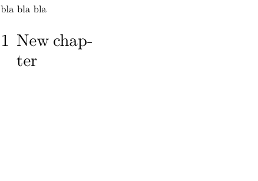

Contents
Summary
The command \definepagebreak is used to define a custom page breaking variant.
Settings
| \definepagebreak[...][...,...] | |
| [...] | name |
| [...,...] | empty header footer dummy frame number +number default reset disable yes no makeup blank preference bigpreference left right even odd quadruple last lastpage start stop xy |
| Option | Explanation |
|---|---|
| see \page | |
Description
Define a keyword for the
\page
command that combines the properties of several other keywords. This keyword can also be used with the
page
key in structural commands.
Examples
Example 1
-
\setuppapersize[A10,landscape][A8,landscape] \setuppagenumbering[alternative=singlesided, location={header,inright}] \setuppaper[nx=2, ny=2] \setuparranging[XY] \showframe[cut] \definepagebreak[emptyodd][yes,header,footer,odd] \setuphead[chapter][page=emptyodd] bla bla bla \chapter{New chapter}
- 
Notes
See also
- page-brk.mkiv
- \page
- Document_structure_and_headlines/Headlines_formatting#Empty_the_headers_of_pages_preceding_a_new_chapter inserted page in doublesided layouts without header and footer